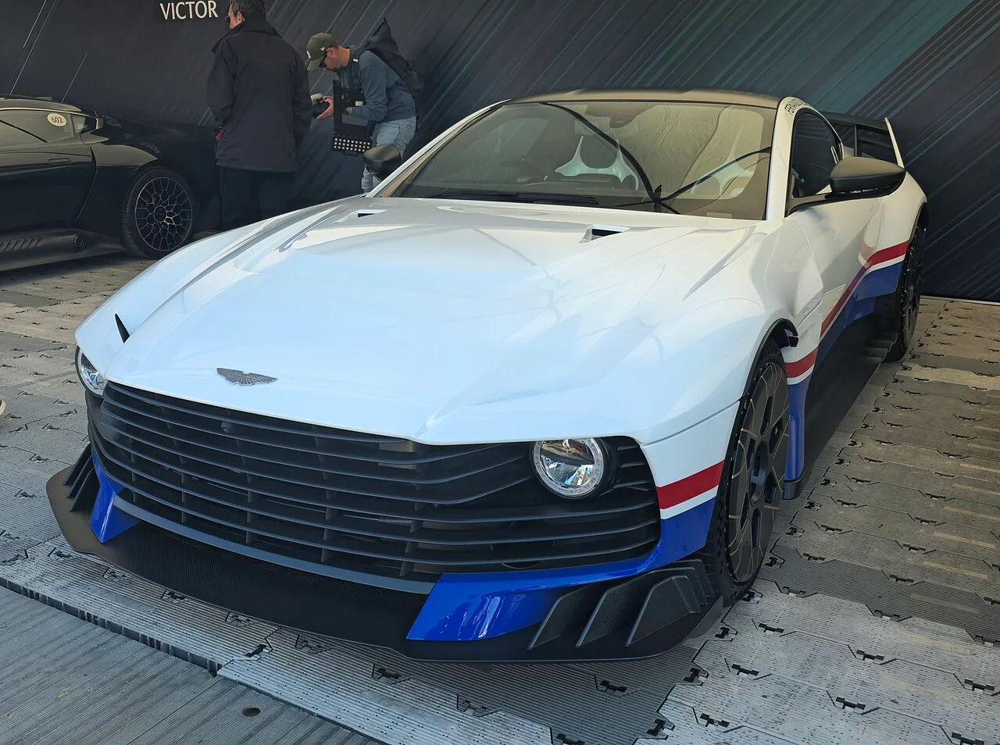
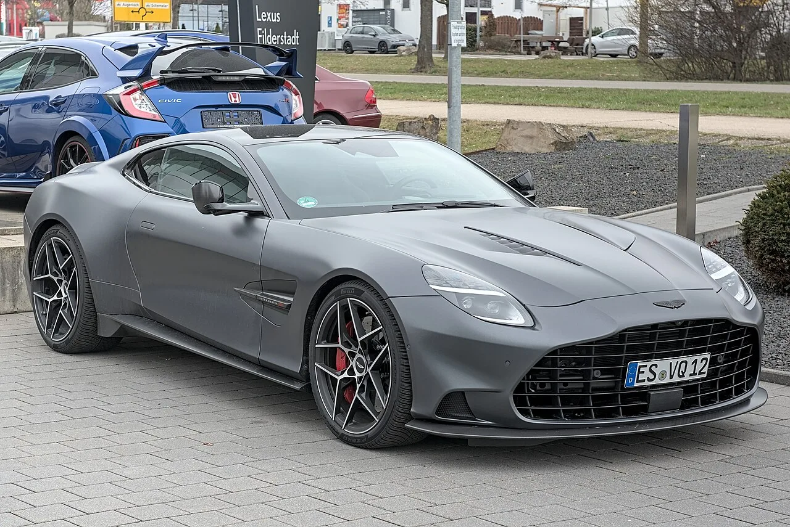
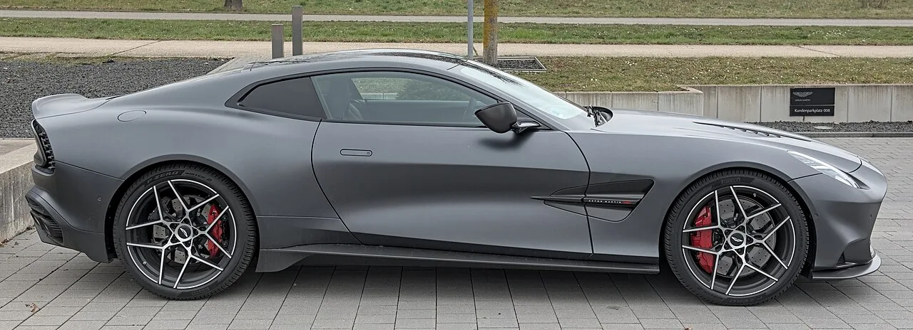

▲ 애스턴마틴 밸리언트. 발렌은 발루어·밸리언트에 이은 Q 브랜드 V12 3부작의 세 번째다
애스턴마틴이 몬터레이 카 위크에서 신형 발렌(Valen)을 공개했습니다.
5.2리터 트윈터보 V12에 838마력. 0-100km/h는 3.1초, 최고속도는 시속 344km입니다.
그런데 이 차에서 더 흥미로운 것은 더한 것이 아니라 덜어낸 것입니다. 뒷유리를 아예 없앴습니다.
1. 838마력 V12의 자리
심장은 5.2리터 트윈터보 V12입니다. 출력은 838마력.
변속기는 ZF 8단 트랜스액슬입니다. 수동이 아닙니다. 최근 포르쉐·맥라렌·고든 머레이가 수동을 되살리는 흐름과는 다른 선택입니다.
트랜스액슬은 변속기를 뒤차축 쪽에 두는 배치입니다. 앞에 무거운 V12를 얹은 차에서 앞뒤 무게 배분을 맞추기 위한 구조입니다.
| 항목 | 제원 |
|---|---|
| 엔진 | 5.2L 트윈터보 V12 |
| 최고출력 | 838마력 |
| 0-100km/h | 3.1초 |
| 최고속도 | 344km/h (214mph) |
| 변속기 | ZF 8단 트랜스액슬 |
| 생산 수량 | 150대 |
| 가격 | 약 200만 달러~ |
애스턴마틴은 이 차를 "세계에서 가장 강력한 프론트엔진 양산차"로 소개합니다. 다만 이는 회사 측 주장이고, '양산차'의 정의에 따라 달라질 수 있는 표현입니다. 150대 한정 커미션 모델을 양산차로 볼 것인지부터가 논쟁거리입니다.
2. 110kg을 어떻게 덜어냈나
이 차의 진짜 이야기는 경량화입니다. 기본 V12 플랫폼 대비 최대 110kg을 덜어냈습니다.
핵심은 풀카본 바디입니다. 패널 전체를 카본 파이버로 만들었습니다. 여기에 경량 서스펜션 팩을 선택하면 17kg이 더 빠집니다.
21인치 마그네슘 휠도 같은 맥락입니다. 마그네슘은 알루미늄보다 가볍고, 휠은 스프링 아래 질량이라 같은 무게를 줄여도 승차감과 핸들링에 미치는 영향이 훨씬 큽니다. 브레이크는 카본 세라믹입니다.
그리고 뒷유리를 없앴습니다. 유리는 생각보다 무겁고 차체 위쪽에 자리해 무게중심에도 불리합니다. 대신 후방 시야를 포기해야 합니다. 카메라로 대체하는 방식이 일반적입니다.

▲ 애스턴마틴 밸리언트. 발렌도 같은 Q 브랜드 라인에서 경량화에 집중했다
3. 뱅퀴시보다 50% 큰 소리
배기는 티타늄으로 만들었습니다. 무게를 줄이려는 목적이 우선이지만, 결과는 소리로도 나타납니다.
애스턴마틴에 따르면 뱅퀴시 대비 50% 큰 소리를 냅니다. 뒤에는 쿼드 배기구가 노출된 카본과 함께 배치됩니다.
요즘 신차에서 배기음을 키우기는 쉽지 않습니다. 소음 규제가 갈수록 빡빡해지고 있기 때문입니다. 150대 한정이라는 소량 생산이 이런 선택을 가능하게 만든 측면이 있습니다.

▲ 애스턴마틴 뱅퀴시. 발렌의 티타늄 배기는 이 차보다 50% 큰 소리를 낸다
4. Q 브랜드 V12 3부작의 마지막
발렌은 갑자기 나온 차가 아닙니다. 애스턴마틴 Q 브랜드가 진행해온 V12 3부작의 세 번째입니다.
🏁 애스턴마틴 Q 브랜드 V12 3부작
- ①발루어(Valour) — 첫 번째
- ②밸리언트(Valiant) — 두 번째
- ③발렌(Valen) — 세 번째, 이번 공개
Q는 애스턴마틴의 맞춤 제작 부서입니다. 발렌은 커미션 방식으로만 판매되므로, 고객이 사양을 지정해 주문하는 형태입니다.
Q 전용 색상인 새틴 안드로메다 레드가 대표 사양으로 제시됐고, 각진 사이드 스트레이크와 공격적인 디퓨저가 외관 특징입니다.
가격은 약 200만 달러부터인데, 여기에 Q 커스터마이징 비용은 별도입니다. 실제 인도 가격은 이보다 상당히 올라갑니다.
5. 이 차가 놓인 자리
발렌이 공개된 2026년 몬터레이 카 위크는 유독 V12와 수동변속기 이야기가 몰린 무대였습니다.
고든 머레이는 4.2리터 자연흡기 V12에 6단 수동을 얹은 S1을 내놨고, 람보르기니 CEO는 "수동 계획은 없다"고 못 박았습니다. 같은 자리에서 정반대 신호가 나온 셈입니다.
발렌의 선택은 그 사이 어딘가입니다. V12는 지키되 변속기는 자동(ZF 8단 트랜스액슬)을 택했습니다. 트랜스액슬 배치와 838마력을 감당하려면 현실적인 선택이기도 합니다.
요약하면 발렌은 엔진에서는 과거를 지키고, 변속기와 소재에서는 현재를 택한 차입니다.

▲ 애스턴마틴 뱅퀴시 측면. 발렌은 여기에 풀카본 바디를 더해 110kg을 덜어냈다
6. 정리
애스턴마틴 발렌은 5.2L 트윈터보 V12에 838마력, 0-100km/h 3.1초, 최고속도 344km/h를 냅니다. 150대 한정이고 약 200만 달러부터 시작합니다.
풀카본 바디로 최대 110kg을 덜어냈고, 21인치 마그네슘 휠과 카본 세라믹 브레이크, 티타늄 배기를 썼습니다. 뒷유리는 무게를 이유로 삭제했습니다.
"세계에서 가장 강력한 프론트엔진 양산차"라는 표현은 애스턴마틴의 주장이라는 점은 감안해서 봐야 합니다. 다만 V12를 이 시점에 이 정도 출력으로 내놓는 브랜드가 몇 남지 않았다는 사실은 분명합니다.